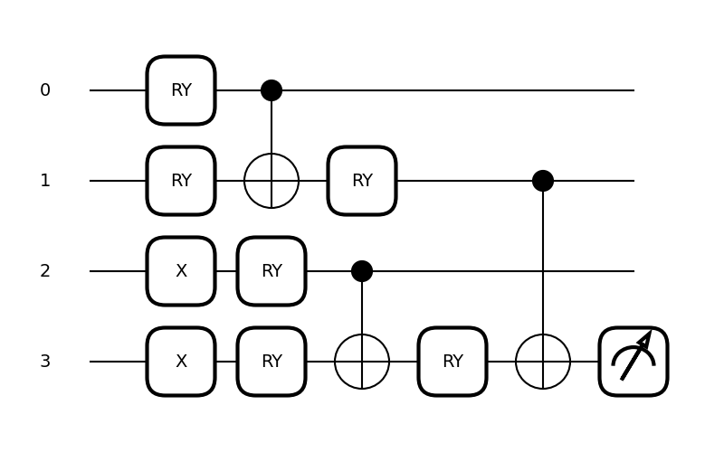
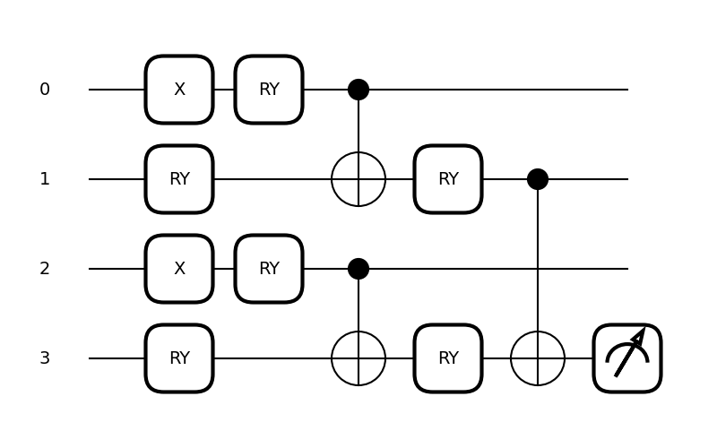
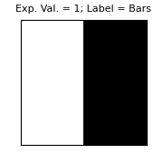
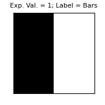

Note
Click here to download the full example code
Tensor-network quantum circuits¶
Authors: Diego Guala1 , Esther Cruz-Rico2 , Shaoming Zhang2 , Juan Miguel Arrazola1 — Posted: 29 March 2022. Last updated: 27 June 2022.
This demonstration explains how to use PennyLane templates to design and implement tensor-network quantum circuits as in Ref. 1. Tensor-network quantum circuits emulate the shape and connectivity of tensor networks such as matrix product states and tree tensor networks.
We begin with a short introduction to tensor networks and explain their relationship to quantum circuits. Next, we illustrate how PennyLane’s templates make it easy to design, customize, and simulate these circuits. Finally, we show how to use the circuits to learn to classify the bars and stripes data set. This is a toy problem where the template learns to recognize whether an image exhibits horizontal stripes or vertical bars.
Tensors and Tensor Networks¶
Tensors are multi-dimensional arrays of numbers. Intuitively, they can be interpreted as a generalization of scalars, vectors, and matrices. Tensors can be described by their rank, indices, and the dimension of the indices. The rank is the number of indices in a tensor — a scalar has rank zero, a vector has rank one, and a matrix has rank two. The dimension of an index is the number of values that index can take. For example, a vector with three elements has one index that can take three values. This is vector is therefore a rank one tensor and its index has dimension three.
To define tensor networks, it is important to first understand tensor contraction. Two or more tensors can be contracted by summing over repeated indices. In diagrammatic notation, the repeated indices appear as lines connecting tensors, as in the figure below. We see two tensors of rank two connected by one repeated index, \(k\). The dimension of the repeated index is called the bond dimension.

The contraction of the tensors above is equivalent to the standard matrix multiplication formula and can be expressed as
where \(C_{ij}\) denotes the entry for the \(i\)-th row and \(j\)-th column of the product \(C=AB\).
A tensor network is a collection of tensors where a subset of all indices are contracted. As mentioned above, we can use diagrammatic notation to specify which indices and tensors will be contracted together by connecting individual tensors with lines. Tensor networks can represent complicated operations involving several tensors with many indices contracted in sophisticated patterns.
Two well-known tensor network architectures are matrix product states (MPS) and tree tensor networks (TTN). These follow specific patterns of connections between tensors and can be extended to have many or few indices. Examples of these architectures with only a few tensors can be seen in the figure below. An MPS is shown on the left and a TTN on the right.

These tensor networks are commonly used to efficiently represent certain many-body quantum states 2. Every quantum circuit can be represented as a tensor network, with the bond dimension dependent on the width and connectivity of the circuit. Moreover, one can design quantum circuits that have the same connectivity as well-known tensor networks like MPS and TTN. We call these tensor-network quantum circuits. Note that the connectivity of a tensor network is related to how entanglement is distributed and how correlations spread in the resulting tensor-network quantum circuit. We therefore design circuits based on the tensor networks that best capture the information we want to extract.
In tensor-network quantum circuits, the tensor network architecture acts as a guideline for the shape of the quantum circuit. More specifically, the tensors in the tensor networks above are replaced with unitary operations to obtain quantum circuits, as illustrated in the figure below.

Since the unitary operations \(U_1\) to \(U_3\) are in principle completely general, it is not always clear how to implement them with a specific gate set. Instead, we can replace the unitary operations with variational quantum circuits determined by a specific template of choice. The PennyLane tensor network templates allow us to do precisely this: implement tensor-network quantum circuits with user-defined circuit ansatze as the unitary operations. In this sense, just as a template is a strategy for arranging parametrized gates, tensor-network quantum circuits are strategies for structuring circuit templates. They can therefore be interpreted as templates of templates, i.e., as meta-templates.
PennyLane Implementation¶
We now demonstrate how to use PennyLane to build and simulate tensor-network quantum circuits.
The first step is to define the circuit that will be broadcast into the tensor network shape. We call this a block. The block defines a variational quantum circuit that takes the position of tensors in the network.
With the block defined, we can build the full tensor-network quantum circuit. The following code broadcasts the above block into the shape of an MPS tensor network and computes the expectation value of a Pauli Z operator on the bottom qubit.
dev = qml.device("default.qubit", wires=4)
@qml.qnode(dev, interface="autograd")
def circuit(template_weights):
qml.MPS(
wires=range(4),
n_block_wires=2,
block=block,
n_params_block=2,
template_weights=template_weights,
)
return qml.expval(qml.PauliZ(wires=3))
np.random.seed(1)
weights = np.random.random(size=[3, 2])
qml.drawer.use_style("black_white")
fig, ax = qml.draw_mpl(circuit, expansion_strategy="device")(weights)
fig.set_size_inches((6, 3))
Using the MPS template we can easily change the block type,
depth, and size. For example, the block can contain a template like StronglyEntanglingLayers,
yielding a deeper block.
def deep_block(weights, wires):
qml.StronglyEntanglingLayers(weights, wires)
We can use the MPS template again and simply set
n_params_block = 3 to suit the new block.
dev = qml.device("default.qubit", wires=4)
@qml.qnode(dev, interface="autograd")
def circuit(template_weights):
qml.MPS(
wires=range(4),
n_block_wires=2,
block=deep_block,
n_params_block=3,
template_weights=template_weights,
)
return qml.expval(qml.PauliZ(wires=3))
To ensure that the weights of the block and template_weights
sent to the MPS template are compatible, we use
the shape function and
replicate the elemnts for the number of expected blocks. Since this example
will have three blocks, we replicate the elements three times using [list]*3.
The resulting circuit is illustrated in the figure below the code.
Note that this circuit retains the layout of an MPS,
but each block is now a deeper circuit with more gates.
Both this circuit and the previous circuit
can be represented by an MPS with a bond dimension of two.
shape = qml.StronglyEntanglingLayers.shape(n_layers=2, n_wires=2)
template_weights = [np.random.random(size=shape)] * 3
fig, ax = qml.draw_mpl(circuit, expansion_strategy="device")(template_weights)

In addition to deep blocks, we can easily expand to wider blocks with more
input wires. In the next example, we use the SimplifiedTwoDesign
template as the block.
def wide_block(weights, wires):
qml.SimplifiedTwoDesign(initial_layer_weights=weights[0], weights=weights[1], wires=wires)
To implement this wider block, we can use the MPS template
as before. To account for the extra wires per block, we simply set the n_block_wires
argument to a higher number. The figure below shows the resulting circuit. Notice
that, in the circuit diagram, gates are left-justified. Therefore parts of later blocks
appear near the beginning of the circuit. Furthermore, this circuit has a higher bond
dimension than the previous ones and would correspond to an MPS with a bond dimension of four.
dev = qml.device("default.qubit", wires=8)
@qml.qnode(dev, interface="autograd")
def circuit(template_weights):
qml.MPS(
wires=range(8),
n_block_wires=4,
block=wide_block,
n_params_block=2,
template_weights=template_weights,
)
return qml.expval(qml.PauliZ(wires=7))
shapes = qml.SimplifiedTwoDesign.shape(n_layers=1, n_wires=4)
weights = [np.random.random(size=shape) for shape in shapes]
template_weights = [weights] * 3
fig, ax = qml.draw_mpl(circuit, expansion_strategy="device")(template_weights)

We can also broadcast a block to the tree tensor network architecture by using the
TTN template.
def block(weights, wires):
qml.RX(weights[0], wires=wires[0])
qml.RX(weights[1], wires=wires[1])
qml.CNOT(wires=wires)
dev = qml.device("default.qubit", wires=8)
@qml.qnode(dev, interface="autograd")
def circuit(template_weights):
qml.TTN(
wires=range(8),
n_block_wires=2,
block=block,
n_params_block=2,
template_weights=template_weights,
)
return qml.expval(qml.PauliZ(wires=7))
weights = np.random.random(size=[7, 2])
fig, ax = qml.draw_mpl(circuit, expansion_strategy="device")(weights)
fig.set_size_inches((4, 4))
Classifying the bars and stripes data set¶
Next, we use a tensor-network quantum circuit to tackle a toy machine learning problem. For this, we use the bars and stripes data set and optimize a parametrized circuit to label the images as either bars or stripes. The data set is composed of binary black and white images of size \(n \times n\) pixels. In images that should receive the bars label, all pixels in any given column have the same color. In images with the stripes label, all pixels in any given row have the same color. The full data set for \(4\times 4\) images is shown in the image below:

A quantum circuit that successfully performs this task accepts any image from the data set as input and outputs the correct label. We will therefore choose a data encoding strategy that can record the input image in a qubit register, a processing circuit that can analyze the data, and a final measurement that can serve as a label of either stripes or bars.
The first step is to generate the bars and stripes data set. For \(2\times 2\) images, we can manually define the full data set, giving white pixels a value of 1 and black pixels a value of 0:
import matplotlib.pyplot as plt
BAS = [[1, 1, 0, 0], [0, 0, 1, 1], [1, 0, 1, 0], [0, 1, 0, 1]]
j = 1
plt.figure(figsize=[3, 3])
for i in BAS:
plt.subplot(2, 2, j)
j += 1
plt.imshow(np.reshape(i, [2, 2]), cmap="gray")
plt.xticks([])
plt.yticks([])

The next step is to define the parameterized quantum circuit that will be trained
to label the images. This involves determining the block and the tensor-network architecture.
For the block, a circuit consisting of RY rotations and
CNOT gates suffices for this simple data set.
As for the tensor-network architecture, we use the tree tensor-network quantum circuit.
We use BasisStatePreparation to encode the input images.
The following code implements the BasisStatePreparation encoding,
followed by a TTN circuit using the above block. Finally, we compute the expectation
value of a PauliZ measurement as the output.
The circuit diagram below shows the full circuit. The BasisStatePreparation
encoding appears in the initial PauliX gates.
dev = qml.device("default.qubit", wires=4)
@qml.qnode(dev, interface="autograd")
def circuit(image, template_weights):
qml.BasisStatePreparation(image, wires=range(4))
qml.TTN(
wires=range(4),
n_block_wires=2,
block=block,
n_params_block=2,
template_weights=template_weights,
)
return qml.expval(qml.PauliZ(wires=3))
weights = np.random.random(size=[3, 2])
fig, ax = qml.draw_mpl(circuit, expansion_strategy="device")(BAS[0], weights)
fig.set_size_inches((6, 3.5))
When the output of the above circuit is less than zero, we label the image “stripes”, otherwise we label it “bars”. Based on these labels, we define a cost function to train the circuit. The cost function in the following code adds the expectation value result if the label should be negative and subtracts the result if the label should be positive. In other words, the cost will be minimized when the stripes images output negative one and the bars images output positive one.
Finally, we initialize the parameters and use PennyLane’s built-in optimizer train the circuit over 100 iterations. This optimizer will attempt to minimize the cost function.
params = np.random.random(size=[3, 2], requires_grad=True)
optimizer = qml.GradientDescentOptimizer(stepsize=0.1)
for k in range(100):
if k % 20 == 0:
print(f"Step {k}, cost: {costfunc(params)}")
params = optimizer.step(costfunc, params)
Out:
Step 0, cost: -0.01795177455549657
Step 20, cost: -2.96193623652454
Step 40, cost: -3.9999999973819786
Step 60, cost: -4.0000000000000036
Step 80, cost: -4.000000000000002
With the circuit trained and the parameters stored in params,
we can now show the full circuits and the resulting output for each image.
for image in BAS:
fig, ax = qml.draw_mpl(circuit, expansion_strategy="device")(image, params)
plt.figure(figsize=[1.8, 1.8])
plt.imshow(np.reshape(image, [2, 2]), cmap="gray")
plt.title(
f"Exp. Val. = {circuit(image,params):.0f};"
+ f" Label = {'Bars' if circuit(image,params)>0 else 'Stripes'}",
fontsize=8,
)
plt.xticks([])
plt.yticks([])


- 

- 
- 

- 
The resulting labels are all correct. For images with stripes, the circuit outputs an expectation value of minus one, corresponding to stripes and for images with bars the circuit outputs an expectation value of positive one, corresponding to bars.
References¶
- 1
W. Huggins, P. Patil, B. Mitchell, K. B. Whaley, and E. M. Stoudenmire, Quantum Science and Technology 4, 024001 (2019), ISSN 2058-9565, URL http://dx.doi.org/10.1088/2058-9565/aaea94
- 2
R. Orús, Annals of Physics 349, 117 (2014), ISSN 0003- 4916, URL https://www.sciencedirect.com/science/article/pii/S0003491614001596.
About the authors¶

Diego Guala

Esther Cruz-Rico

Shaoming Zhang

Juan Miguel Arrazola
Total running time of the script: ( 0 minutes 6.390 seconds)